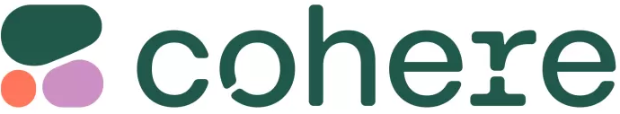
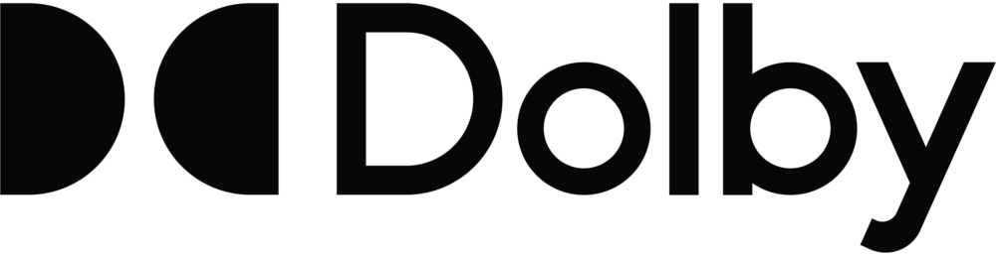
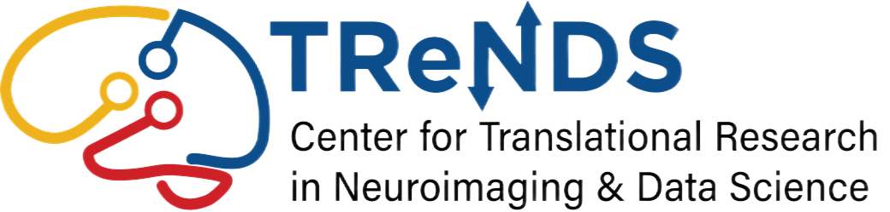

Riyasat Ohib
Google DeepMind. Research Scientist

I am currently a Research Scientist at Google DeepMind in New York City, where I work on representation alignment, model behavior, and interpretability for AGI Readiness. Before that, I received my Ph.D. from Georgia Tech, where I was advised by Dr. Vince Calhoun and Dr. Sergey Plis. My doctoral research focused on sparse learning across diverse paradigms, including supervised deep learning, multimodal learning, federated learning, and reinforcement learning. Along the way, I explored these ideas through research internships at Google DeepMind, Cohere, Dolby Labs, and FAIR at Meta AI.
I have broad interests in learning algorithms and the study of intelligence. If you’d like to chat about research or just connect, email is the best way to reach me.
Research and Work Experience

Research Scientist
July 2026 - Present
Representation alignment, model behavior, and interpretability for AGI Readiness.
Research Intern
Spring 2026
Fall 2025
Diffusion model representation engineering and alignment. Focus on analysis, controllability, interpretability & safety.

Research Intern
Fall 2024
Inference-time activation sparsity techniques for large language models (LLMs).

Research Intern
Summer 2024
Efficient fine-tuning method for LLMs using probabilistic layer selection.
Research Intern
Summer 2022
At Meta FAIR I worked on research on signal processing based techniques for sparse Deep Learning. My neural network sparsity library was integrated with the facebookresearch/fairscale repo.

GRA
Fall 2019 - Present
Graduate research assistant (GRA) with Dr. Vince Calhoun and Dr. Sergey Plis.
Education
Ph.D. in ECE
Aug 2021 - May 2026
Research in learning algorithms and sparse learning across domains.
Dissertation: Principled Sparsity for Efficient Deep Learning Across Computational Paradigms.
CGPA 4.0/4.0
Master's
Aug 2019 - May 2021
Research and thesis on Explicit Group Sparse Projection. Master's Thesis.
CGPA 4.0/4.0
news
| Jan 02, 2026 | Latest work on Sparse Federated Learning, SSFL: Discovering Sparse Unified Subnetworks at Initialization for Efficient Federated Learning was accepted at TMLR 2026. |
|---|---|
| Sep 08, 2025 | Excited to join Google DeepMind as a Research Intern! Will be working on model representation analysis and alignment with applications to safety. |
| Mar 05, 2025 | New work on sparse model adapters out, Exploring Sparse Adapters for Scalable Merging of Parameter Efficient Experts was accepted at COLM 2025. |
| Sep 25, 2024 | Our latest work, Efficient Reinforcement Learning by Discovering Neural Pathways was accepted at NeurIPS 2024. |
| Sep 03, 2024 | Excited to join the model efficiency team at Cohere as a Research Intern! |
| May 20, 2024 | Joining the Advanced Technologies group at Dolby Laboratories as a Ph.D. Research Intern! Will be working on novel efficient finetuning methods for both LLMs and multimodal VLMs. |